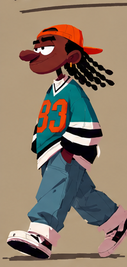

Your referenceOne character rebuilt from scratch to the style rules taken from your sheets: flat shapes, one shadow tone per colour, no outlines, no edge light, no grain, warm khaki world, three-quarter view, hands in pockets.

Your referenceOnly the lids, pupils, brows and the tiny mouth change, like the headshot rows in your sheet.